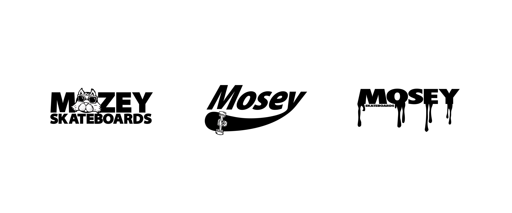

483E: Computer Assisted Design

Andrew Rains Graphic Designer
Welcome
I’m a professional Artist/Graphic Designer with a vast array of skills and looking to make my mark. With an urban style mixed with punk, I hope to catch my viewers eye in hopes they look twice. Over all I feel as though I have a good sense for designing and truly believe it is my calling.

